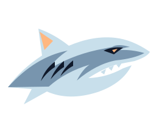
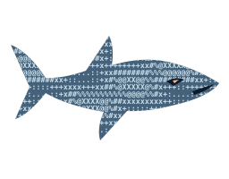
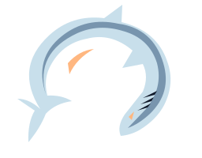

<!doctype html><meta charset=utf-8><style>@font-face{font-family:Inter;src:url('../../ui-assets/inter.woff2')}*{box-sizing:border-box}body{margin:0;background:#10192a;color:#eaf3f7;font:16px Inter,'Segoe UI',sans-serif;padding:30px}main{display:flex;gap:14px}article{flex:1;min-width:0;background:#172437;border-radius:14px;padding:22px}.mark{width:100%;height:194px}h2{font-size:19px;font-weight:520;margin:12px 0 18px}.lock{display:flex;align-items:center;gap:4px;color:#fff3e7;font-size:33px;font-weight:750;letter-spacing:-2px}.lock img{width:54px}.sizes{display:flex;align-items:center;gap:8px;margin-top:20px;font:11px Consolas;color:#b2c7d6}</style><main><article><h2>Batiente</h2><div class=lock>Cut</div><div class=sizes>32 px　16 px</div></article><article><h2>Batimetría</h2><div class=lock>Cut</div><div class=sizes>32 px　16 px</div></article><article><h2>Contracorriente</h2><div class=lock>Cut</div><div class=sizes>32 px　16 px</div></article></main>
